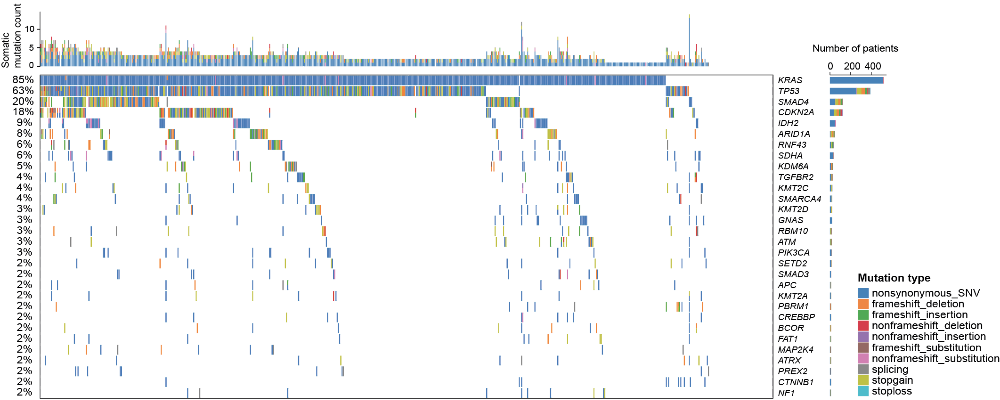

According to the cancer statistics, PAAD is one of the most aggressive and deadly cancers in China, with an estimate of 90,100 new cases and 79,400 new deaths. We recognize that the high mortality of PAAD in China can be traced back to the lack of comprehensive molecular subtyping (and prognostic models to evaluate risk levels of relapse), and that the current histopathological classifications are of limited use to guide clinical decision-making. Therefore, there is an unmet need to identify new biomarkers for molecular subtyping in PAAD.
The current stratification for PAAD patients is mainly based on: i) the mutation profiles of genes, including homologous recombination repair (HRR) genes, and highly mutated genes (such as KRAS, TP53, CDKN2A and SMAD4); and ii) the RNA-seq expression data to estimate immune cytolytic activity.
We report the mutational landscape of 608 PAAD patients, the largest cohort ever in China, generating the most comprehensive resource on genetic alternations (somatic mutations, pathogenic germline variants, copy number variations, and well-known genomic markers, such as TMB, copy number instability and somatic signatures).
We are the first to report that the poor prognosis is associated with amplification of genes involved in DNA repair and RTK related signaling pathways.
Using the information of copy number variations (CNV), we are able to stratify patients into four molecular subtypes (namely, repair-deficient, proliferation-active, repair-proficient and repair-enhanced subtypes) that differed in prognosis.
We show that repair-deficient and proliferation-active subtypes are better suited for DNA damage therapies, while immunotherapy highly recommended for repair-proficient and repair-enhanced subtypes.
We construct a prognostic model incorporating the information on CNV of DNA repair and RTK related genes, and illustrate the use of the constructed model in distinguishing patients with high and low risk of relapse.
We reinforce the prognostic value of our identified genes in DNA repair and RTK related signaling pathways by analyzing publicly available datasets.
The top ranked targets (~150) were highly enriched for genes involved in TRAF6- or TNFR1-induced NF-kappa B activation, including BIRC2/3, IKBKB/G, NFKB1/2, NFKBIA/B, TRAF1/2/6, MYD88 and TNF.
